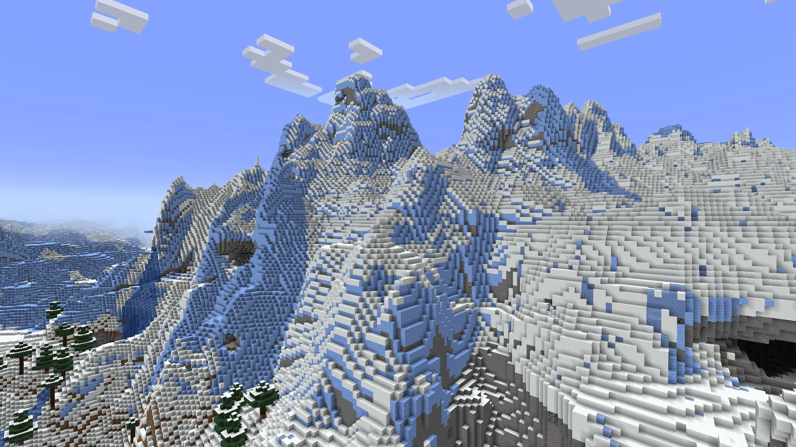

Minecraft biomy
Zpět
Horské biomy
Horské biomy jsou tvořeny vysokým členitým povrchem.
Běžným zvířetem je koza.
Horské biomy můžeme rozdělit na:
- Zubaté vrcholy
- Zmrzlé vrcholy
- Kamenné vrcholy
- Louka
- Třešňový háj
- Háj
- Zasněžené svahy
- Větrné kopce
- Větrem ošlehané štěrkové kopce
- Větrný les
